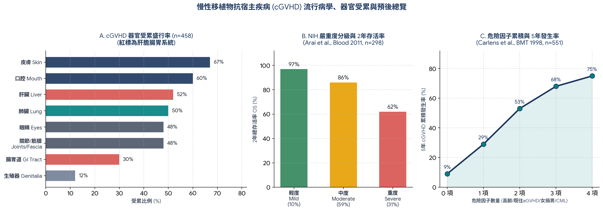
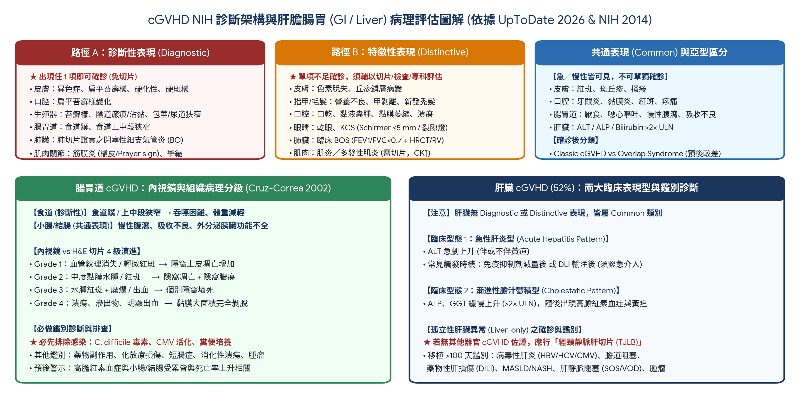

1. 疾病定義、流行病學與危險因子
慢性移植物抗宿主疾病（cGVHD）發生於異體造血幹細胞移植（Allogeneic HCT）後，由捐贈者免疫細胞攻擊宿主組織所致。現行 NIH 共識標準已廢除以「移植後 100 天」作為急／慢性之絕對分界，改為完全依據臨床與病理特徵區分急性（aGVHD）、典型慢性（Classic cGVHD）與重疊症候群（Overlap Syndrome）。cGVHD 並非單純由 aGVHD 演變而來，典型發病時間為移植後 ≥3 個月（多數於第 1 年內，但亦可能數年後才發病），表現高度類似自體免疫疾病（硬皮症、乾燥症、原發性膽汁性膽管炎、閉塞性細支氣管炎）。
~40%
異體 HCT 後平均發生率（文獻範圍 6–80%）
52% / 30%
肝臟 (52%) 與腸胃道 (30%) 受累盛行率
RR 1.56 / 2.43
相較無 GVHD 者之總死亡率 (RR 1.56) 與治療相關死亡率 (RR 2.43)
HR 6.6
血小板 <100,000/µL 之總死亡風險比
核心危險因子（具顯著累積效應）
- 免疫與捐贈者因素：HLA 不合程度越高、捐贈者或受贈者高齡、女性捐贈者 → 男性受贈者、捐贈者既往懷孕或輸血史（異體免疫化）。
- 移植物與預處理：周邊血幹細胞（PBPC）風險高於骨髓或臍帶血；含全身放射線照射（TBI）之預處理；傳統 Tacrolimus-MTX 預防（相較於移植後環磷醯胺 PTCy 方案，NEJM 2023 證實 PTCy 顯著降低 cGVHD 發生率）。
- 移植後事件與感染：既往 aGVHD（HR 1.67）、未經照射之捐贈者淋巴球輸注（DLI）、脾臟切除、捐／受贈者 CMV 血清陽性、捐贈者 EBV 陽性。

圖 1：(A) 前瞻性世代研究（Jacobsohn et al., Blood 2012, n=458）之各器官受累盛行率；(B) NIH 整體嚴重度與 2 年總存活率（Arai et al., Blood 2011, n=298）；(C) 危險因子累積（高齡、既往 aGVHD、女捐男、CML）與 5 年累積發生率（Carlens et al., BMT 1998, n=551）。
2. 肝膽腸胃系統 (GI & Liver) 專題深度解析
消化內科核心診斷定位
依據 2014 NIH 標準，腸胃道僅有「食道蹼（Esophageal web）」與「食道上至中段狹窄」屬於診斷性表現（Diagnostic）；所有其餘腸胃道症狀（噁心、嘔吐、慢性腹瀉、吸收不良、體重減輕）及所有肝臟異常皆歸類為共通表現（Common，見於 aGVHD 與 cGVHD），單獨出現時不可直接確診 cGVHD，必須結合其他器官證據或組織切片，並嚴格排除感染與藥物毒性。
A. 肝臟受累（盛行率 52%）
常伴隨食慾不振、噁心或嘔吐，典型呈現兩種臨床型態：
- 急性肝炎型（Acute hepatitis pattern）：血清 ALT 急劇上升（伴或不伴黃疸），常發生於免疫抑制劑減量後或 DLI 輸注後。此型須立即診斷與介入；若無其他器官 GVHD 證據，常需肝臟切片確診。
- 漸進性膽汁鬱積型（Slowly progressive cholestatic pattern）：ALP 與 GGT 緩慢上升（常 >2× ULN），隨後出現高膽紅素血症與黃疸。
孤立性肝臟異常（Liver-only）：無其他器官診斷性特徵時，建議施行經頸靜脈肝切片（Transjugular liver biopsy, TJLB）以降低出血風險並排除其他病因。
B. 腸胃道受累（盛行率 30%）
- 食道（診斷性表現）：吞嚥困難、痛性潰瘍、體重減輕，內視鏡或鋇劑攝影見食道蹼或上中段食道狹窄／環狀狹窄。
- 小腸與結腸（共通表現）：厭食、噁心嘔吐、慢性腹瀉、吸收不良、體重減輕、兒童生長遲緩。高膽紅素血症與小腸／結腸受累皆與死亡率上升顯著相關。
- 外分泌胰臟功能不全：cGVHD 可造成外分泌胰臟功能不全，臨床表現為持續性脂肪瀉與體重減輕，易被誤診為單純腸道發炎。
C. 內視鏡與組織病理學分級（Cruz-Correa 2002 / Snover 1985）
| 分級 | 內視鏡所見（十二指腸 / 結腸） | 組織病理學特徵（H&E 切片） |
|---|---|---|
| Grade 1 | 黏膜血管紋理消失及／或局部輕微紅斑 | 隱窩上皮細胞凋亡增加（Increased crypt apoptosis） |
| Grade 2 | 中度黏膜水腫及／或紅斑 | 隱窩凋亡合併隱窩膿瘍（Crypt abscesses） |
| Grade 3 | 水腫、紅斑合併糜爛及／或出血 | 個別隱窩壞死（Individual crypt necrosis） |
| Grade 4 | 潰瘍、滲出物與明顯出血 | 大面積黏膜完全剝脫（Total denudation） |

圖 2：NIH 2014 診斷三大路徑（Diagnostic、Distinctive、Common）總覽，以及腸胃道內視鏡／組織病理 4 級分級與肝臟兩大表現型之臨床評估架構。
3. NIH 診斷三大分類與全身器官表現總表
確診 cGVHD 須排除感染、藥物與惡性腫瘤，並符合以下條件之一：(1) ≥1 項「診斷性表現（Diagnostic）」；(2) ≥1 項「特徵性表現（Distinctive）」＋ 切片／客觀檢驗（如 Schirmer test、PFT/HRCT）／專科醫師確認；或(3) 肺切片證實閉塞性細支氣管炎（BO）。
| 器官系統 | Diagnostic 診斷性表現（單項確診） | Distinctive 特徵性表現（須佐證） | Common 共通表現（急／慢性皆見） |
|---|---|---|---|
| 皮膚 (67%) | 皮膚異色症 (Poikiloderma)、扁平苔癬樣、硬化性 (Sclerotic / Groove sign)、硬斑病樣 (Morphea-like)、硬化性苔癬樣 | 色素脫失 (Depigmentation)、丘疹鱗屑病變 | 紅斑、斑丘疹、搔癢 |
| 指甲／毛髮 | 無 | 指甲營養不良、縱脊/脆裂、甲剝離、甲翼狀胬肉、對稱掉甲；新發瘢痕/非瘢痕禿髮、體毛脫落、頭皮脫屑 | 無 |
| 口腔 (60%) | 扁平苔癬樣變化 (Lichen planus-type) | 口乾 (Xerostomia)、黏液囊腫、黏膜萎縮、偽膜、潰瘍 | 牙齦炎、黏膜炎、紅斑、疼痛 |
| 眼睛 (48%) | 無 | 新發乾眼/異物感/眼痛、瘢痕性結膜炎、乾燥性角結膜炎 (KCS)、融合性點狀角膜病變（Schirmer ≤5 mm） | 無 |
| 生殖器 (12%) | 扁平苔癬樣／硬化性苔癬樣；女：陰道瘢痕、陰唇/陰蒂沾黏；男：包莖、尿道口瘢痕/狹窄 | 糜爛、裂隙、潰瘍 | 無 |
| 腸胃道 (30%) | 食道蹼、食道上中段狹窄（內視鏡或鋇劑證實） | 無 | 厭食、噁心嘔吐、慢性腹瀉、吸收不良、體重減輕、生長遲緩 |
| 肝臟 (52%) | 無 | 無 | 急性肝炎型或漸進膽汁鬱積型（Bil/ALP/ALT >2× ULN） |
| 肺臟 (50%) | 肺切片證實之閉塞性細支氣管炎 (BO) | BOS：FEV1/FVC <0.7 且 FEV1 <75%（2年降 ≥10%）、無感染、HRCT 空氣滯留/支氣管擴張或 RV >120% | 機化性肺炎 (COP/BOOP) 歸於其他／重疊特徵 |
| 肌肉關節 (48%) | 筋膜炎（橘皮樣硬化、Prayer sign）、繼發關節僵硬／攣縮 | 肌炎／多發性肌炎（需切片確認，CK 可達 5–50× ULN，EMG 呈發炎性肌病） | 無 |
展開查看：非典型表現（Atypical Presentations）與肺功能常規篩檢時程
- 血液：免疫性血球減少、嗜酸性球增多、低／高丙種球蛋白血症（血小板 <100,000/µL 提示重度預後不良）。
- 神經系統：周邊神經病變、重症肌無力、免疫性腦炎、認知障礙、癲癇、失語症（2026 年已有中樞神經 cGVHD 診斷標準提案，Transplant Cell Ther 2026）。
- 心腎與免疫：心傳導異常、心肌病變、心包／肋膜積液、多發性漿膜炎、腎病症候群（膜性腎病或微小變化病）、雷諾氏現象、自體抗體（約 62% 陽性）。
- BOS 肺功能（PFT）篩檢時程：移植後第 100 天、確診 cGVHD 時、移植後 1 年、確診後前 2 年每 6 個月；已確診 BOS 或肺容積顯著下降者改為第 60、100、160、220 天及 1 年追蹤。
4. 病理切片時機、亞型分類與 NIH 嚴重度分級
切片原則（並非所有個案皆需切片）
- 已有診斷性表現（Diagnostic）者，通常不需切片即可確診。
- 僅有特徵性表現（Distinctive）或孤立性單一器官異常（尤其是肝臟）時，病理切片具關鍵價值：皮膚採 4 mm 全層穿刺切片（含皮下脂肪）；口腔切片可證實口乾／潰瘍；肝臟採經頸靜脈肝切片（TJLB）；肌肉切片因傷口癒合風險常採保守評估。
亞型分類與整體分級
- Classic cGVHD：僅具 cGVHD 特徵，無任何 aGVHD 表現。
- Overlap Syndrome（重疊症候群）：同時存在 cGVHD 與 aGVHD 特徵（如斑丘疹、腹瀉、肝功能異常合併口腔苔癬樣病變），多數研究顯示其存活率與生活品質劣於 Classic cGVHD。
- NIH 整體嚴重度：輕度（≤2 器官無顯著功能障礙）、中度（3 器官無顯著障礙，或 ≤1 器官有顯著障礙但無重大失能）、重度（造成重大失能；註：治療篇 UpToDate 修正版另將 PLT <100,000/µL 列為重度）。
5. 各器官鑑別診斷（排除性診斷核心）
| 器官系統 | 必須排除之主要鑑別診斷 |
|---|---|
| 肝臟 (>100 天膽汁鬱積) | 病毒性肝炎（HBV/HCV/CMV）、膽道阻塞（結石/狹窄/腫瘤）、藥物性肝損傷（DILI）、脂肪性肝炎（MASLD/NASH）、肝靜脈閉塞症（SOS/VOD）、浸潤性病變（淋巴瘤/澱粉樣變/結核/肉芽腫）、敗血症相關膽汁鬱積。 |
| 腸胃道 | 感染（C. difficile、CMV 再活化）、藥物毒性、化放療延遲損傷、發炎性腹瀉、短腸症、消化性潰瘍、腫瘤、全身性疾病（如糖尿病胃輕癱）。 |
| 皮膚 | 特發性扁平苔癬、硬化性苔癬、硬斑病、系統性硬化症、嗜酸性筋膜炎、其他原因之皮膚異色症。 |
| 肺臟 | 呼吸道感染（CMV、弓漿蟲、真菌）、間質性肺病、肉芽腫性疾病（結節病）、瀰漫性肺泡出血。 |
| 肌肉關節 | 皮肌炎、包涵體肌炎、橫紋肌溶解症、類固醇誘發肌病。 |
6. 預後模型與高風險特徵
- NIH 嚴重度分級（已獲多項研究驗證）：診斷時輕／中／重度佔比約 10% / 59% / 31%，對應 2 年總存活率為 97% / 86% / 62%。
- CIBMTR 風險評分（n=5,343）：整合 10 項診斷時變數（年齡、既往 aGVHD、體能狀態、發病時間、捐贈者配對程度等），可預測 5 年 OS 與非復發死亡率（NRM），但尚未與 NIH 分級直接頭對頭比較。
- 關鍵獨立不良預後指標：
- 血小板低下（<100,000/µL）：總死亡率 HR 6.6（95% CI 3.5–12.4）、治療失敗 HR 5.2。
- Overlap Syndrome：多數世代研究顯示存活率低於 Classic cGVHD。
- 皮膚複合分數（NIH Skin Score）：0/1/2/3 分之 2 年 OS 為 86%/83%/81%/69%；6 個月內惡化者死亡 HR 4.7、NRM HR 7.2。
- 肝腸受累：高膽紅素血症與小腸／結腸受累均顯著增加死亡風險。
7. 獨立證據查核報告 (Evidence Verification Audit)
診斷篇查核結論：整體與 NIH 2014 共識及 EBMT 2024 指引高度一致，以下 3 點為臨床應用須留意之細節
- NIH 2014 原版 vs UpToDate 修正版之「重度」定義差異：本診斷篇介紹的 2014 NIH 原版（Jagasia et al., BBMT 2015）僅依據 8 大器官分數評定嚴重度；而姊妹篇（治療篇）為了指導臨床用藥，額外將血小板 <100,000/µL 納入重度（Severe）條件。臨床評估預後時應同步採納血小板指標，但參與臨床試驗收案分層時需留意試驗採用的是 2014 NIH 原版。
- PTCy 預防方案之最新一級證據：原文已納入 NEJM 2023（Bolaños-Meade et al., BMT CTN 1703）隨機試驗，證實移植後環磷醯胺（PTCy + Tacrolimus + MMF）相較傳統 Tacrolimus + MTX 顯著降低 cGVHD 發生率，已改變 2024–2026 全球移植預防標準。
- 非典型與中樞神經（CNS）cGVHD 最新進展：原文已引用 2020 NIH 非典型表現共識（Transplant Cell Ther 2022）及 2026 年中樞神經 cGVHD 診斷標準提案（Denk et al., Transplant Cell Ther 2026），反映 2026 年最新學術共識；唯 CNS cGVHD 仍屬高度排除性診斷，實務上須先徹底排除感染（如 PML、HHV-6、EBV）與 CNI 神經毒性。